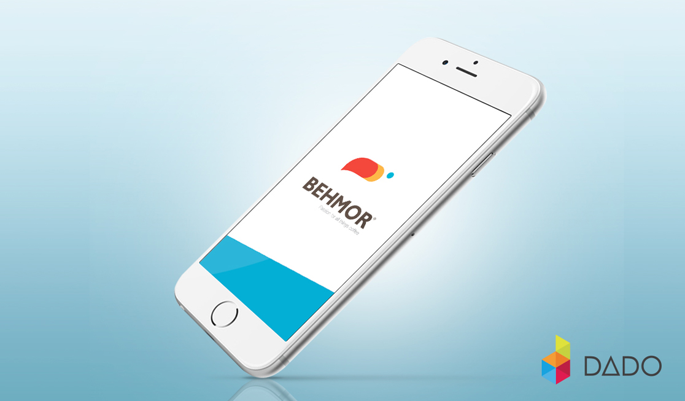
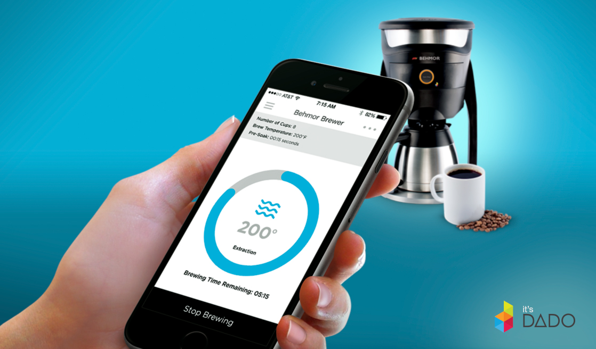
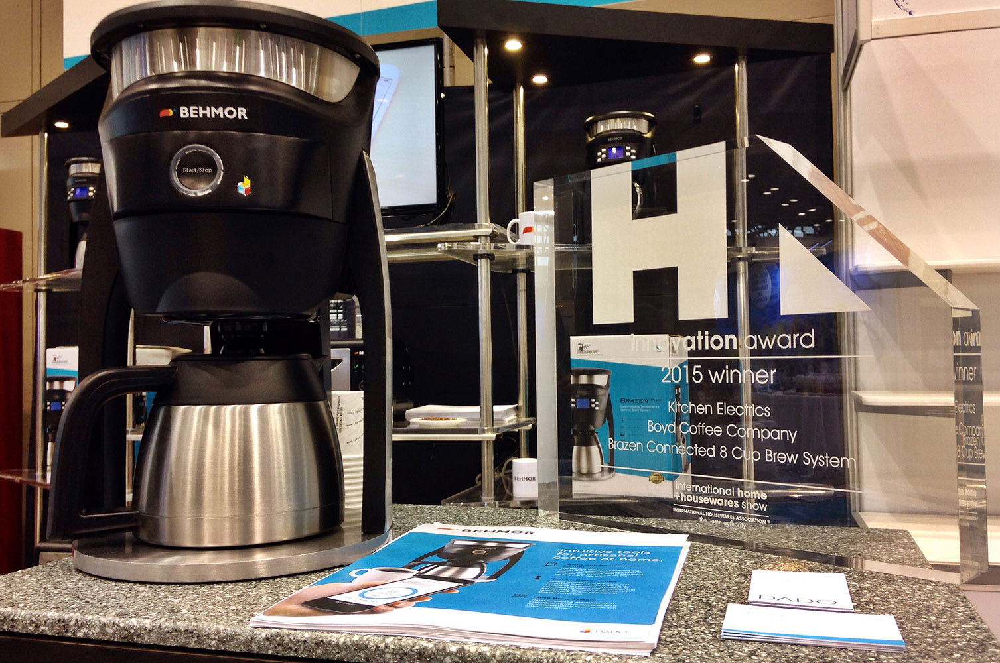

Behmor Connected Brewer
Client: Behmor
The first "connected" coffeemaker on the market, the Behmor Connected builds upon the strengths of the Brazen Plus Brew System to deliver coffee brewing with customizable features all controlled from a smartphone. The "internet of things" is upon us as our appliances get ever smarter and more able to deliver better living standards to us. Here it is now in a modern coffeemaker. The Behmor Connected is a state of the art coffee brewer with never before seen technology that allows you to control your coffee maker experience from your smart phone.
The Connected retains all of the great features of the Behmor System with an application designed by DADO that lets you control every aspect of the brewing process straight from your Apple or Android smart phone via the free Behmor application. It allows you to adjust brewing temperature, pre-soak time, or simply select a brew profile and begin brewing. The app will monitor and keep you updated with the progress of the cycle and will send you a notification when the coffee is ready. Alternately, you can use the button on the front of the brewer to begin the cycle if you want to use it without the app.
The Behmor Connected Brewer and iOS application won the Innovation Award for Kitchen Electrics at the 2015 International Housewares Association Show.
  